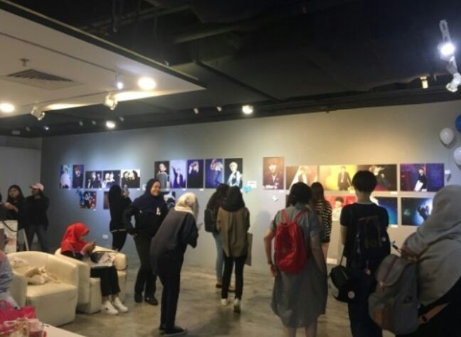
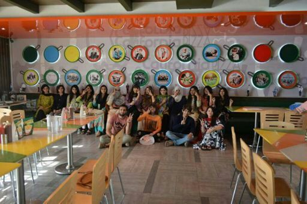
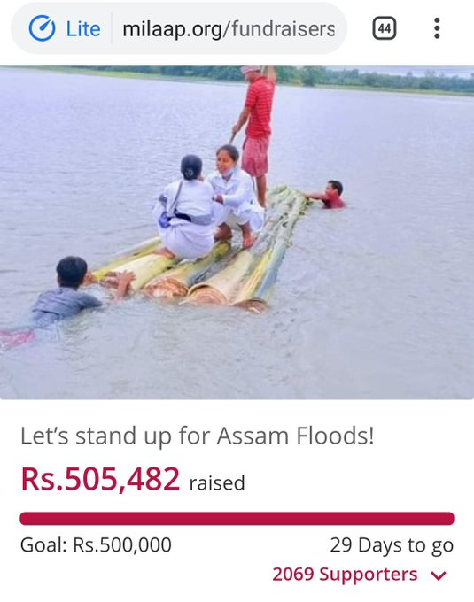
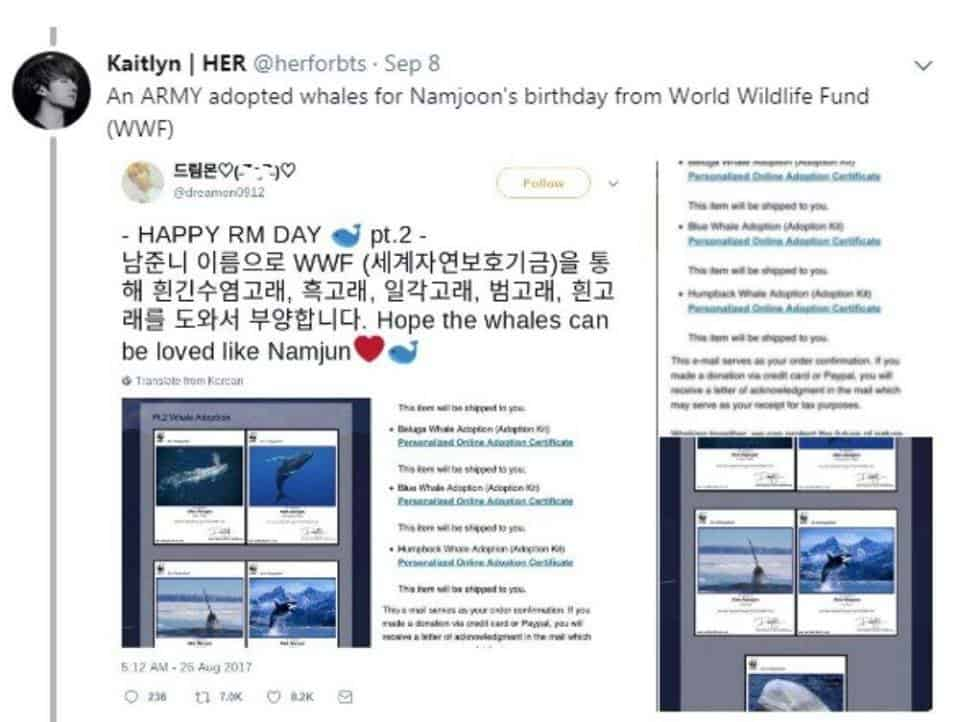
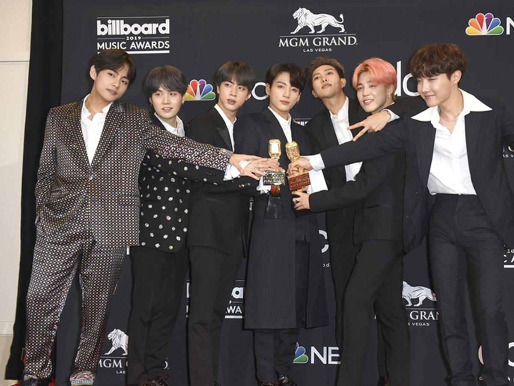

BTS se ha convertido en una de las bandas de K-Pop más populares y exitosas del momento, convirtiendose en un fenómeno de la industria musical que cruzó las fronteras de Corea del Sur desde algunos
años y que continúa conquistando los corazones de millones de personas alrededor del mundo. La boyband inició con el pie derecho el 202o y 2021, con los lanzaminetos de sus álbumes musicales MAP OF THE SOUL y BE
El fandom de BTS llamado ARMY, siempre está pendiente de cada noticia relacionada a los siete miembros de la banda que tienen gran presencia en las redes sociales. La boyband siempre logra
volverse tendencia y sus lanzamientos musicales son un fenómeno viral en internet. Los propios han agradecido el apoyo incondicional a su club de fans y la importancia de su carrera musical. Es por ello que formar parte del ARMY tiene
un significado especial, no solo se trata de saber el nombre de los integrantes de la agrupación o escucahr sus canciones.
💜¿QUÉ SIGNIFICA SER PARTE DEL ARMY DE BTS?💜
ARMY en realidad significa Adorable Representative M.C for Youth que en inglés significa Ejercito, lo cual el último término M.C es usado para alguien que es un maestro en el Rap, por lo que usar ese término
para BTS significa que sus fans son especiales para ellos. El nombre fue dado el 7 de julio por los integrantes.
La relación de BTS y ARMY es muy bonita y lo demuestran cada vez que los conocen. Los chicos de Bangtan han hablado sobre lo que representa el ARMY para ellos y han respondido que ssu fans son sus vidas. ARMY es un ejército
que está detrás de las compras de álbumes, stream en plataformas musicales, traducciones, audencias en cada uno de sus conciertos, apoyo en redes sociales amándolos y lo más importante amándose a sí msimas gracias a su música.
Gracias a todo lo que le transmiten a sus fans por medio de su música, es decir ARMY los miembros fueron incluidos en la edición internacional de la revista Timecomo "Líderes de la nueva generación", y fueron parte de las lsita
de las personas más influyentes del mundo en 2019. Forbes Corea los reconoció como las celebridades más destacadas del país en 2018 y 2020, en tanto que el grupo se pocisionó en el número 43 de la Forbes Celebrity 100 de 2019 como una de las boybands con mayores ingresos
en el mundo. El 2020, la boy band sur coreana terminó e inició bien el año con el lanzamiento de su nuevo álbum musical BE y con la nominación a los grandes premios
GRAMMY.
Debido a la Pandemia BTS decidió hacer un concierto para recaudaciones y para ARMY llamado Music On A Mission en lo cual tuvo el percanse más alto ya que todas sus fans compraron entradas por medio de internt, para poder ver el concierto de manera online.
💜ACCIONES SOLIDARIAS DE LAS ARMYS QUE ENORGULLECEN A BTS💜
Caridad
Imagen
Detalles
BTS por Caridad(Malasia)

Los fans de Malasia se unieron para organizar una expocisión y donaron las ganancias a organizaciones locales en nombre de la banda. Entre ellas se encontraba el Consejo Nacional para Ciegos, que promueve la educación y la seguridad continua a las
personas con discapacidad visual; Mercy Malasya, una organización sin fines de lucro que ayuda a la población local anciana
Todos merecen sonreír(Pakístan)

Las ARMY paquistaínes se unieron a organizar una campaña de salud oral llamada "Porque todos merecen sonreír". La noble causa consistió en enviar dentistas a las escuelas de forma gratuita.
Donación de sangre(Estados Unidos)
Utilizando el hashtag #btsdonoarmy, los seguidore de la banda donaron sangre a la Cruz roja de Estados Unidos. Así atribuyeron a salvar más vidas.
Apoyo a víctimas de inundación(Nepal)

Las ARMY de Nepal organizaron puntos de recolección en todo el país para recaudar dinero y víveres para ayudar a las víctimas de una inundación masiva.
Adopción de ballenas

Los fans hicieron donaciones a WWF y adoptaron cinco ballenas, incuilda una Beluga, de ballenas azules, una jorobada y una Narwhale, por el cumpelaños de uno de los integrantes.
Proyecto conejo pigmeo(Perú)
Las ARMY de Perú hicieron una especie endémica vulnerable. Hace un año adoptaron un conejo pigmeo por el cumpleaños de uno de los miembros. De esa forma, buscan crear conciencia sobre el impacto que los humanos están teniendo en el hábitad de este animal en peligro de extinción.
LOGROS DE BTS
Logro
Detalle
La campaña más exitosa de UNICEF en la hsitoria
En los últimos 4 años BTS ha conseguido grandes colaboraciones, la más especial Love Myself de UNICEF. Desde el año 2017 el grupo ha sido el mayor patrocinador de esta campaña que bsuca enseñar la importancia del amor propio, pues ante la situación mundial, niños
y jóvenes de algunos países se han visto afectados por una crisis de violencia a tal grado que la organización busca erradicar la situación
El dsico más vendido del mundo en el 2020
Map Of The Soul obtuvo 5.6 millones de copias en todo el mundo, en los primeros 4 meses del año liderando ventas eso sin mencionar que se posicionó como el disco #1 en corea del Sur, Reindo Unido, estados Unidos, Canadá, españa y Australia.
Records Guinness
Los Records Guinnes compartieron una publicación en su cuenta de Twitter sobre la nueva edición de su libro. en está se pudo ver a BTS, el ídolo K-Pop más grande donde se puede resaltar con el recórd del grupo musical más influyente de Twitter y el usuario génerico más influyente
en esta misma plataforma.
Primer lugar del chart "Social 50" de Billboard
El Chart "Social 50" de Billboard es la llsiat que presenta a los artistas más activos dentro de las paginas webs y redes sociales, ka empresa de hacer lso conteos es Next Big Sound las interacciones son las platafromas como
su paginal oficial en la Web.
Única banda coreana en el primer puesto del Social Top 50 de Billboard

BTS se llevó el trofeo de Mejor Artista Social por 3 años consecutivos en la premiación de los Billboard Music Awards, convirtiéndose en la primera banda coreana en lograrlo, falta muy poco para superar el récord de más trofeos en esta categoría que pertenece a Justin Bieber con un total de 6 trofeos.
Única banda que tuvo su primer MTV Uplugged
Son el primer grupo de K-Pop en presengtarse en el legendario canal de música MTVpresentando su primer MTV Unplugged cantando sus más recientes canciones de su nuevo álbum BE y el cover de la canción de Coldplay Fix You